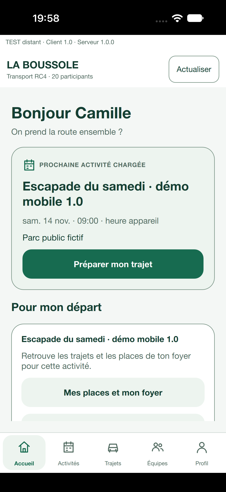
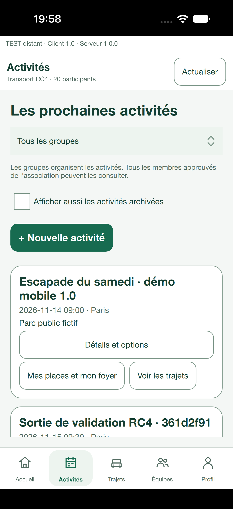
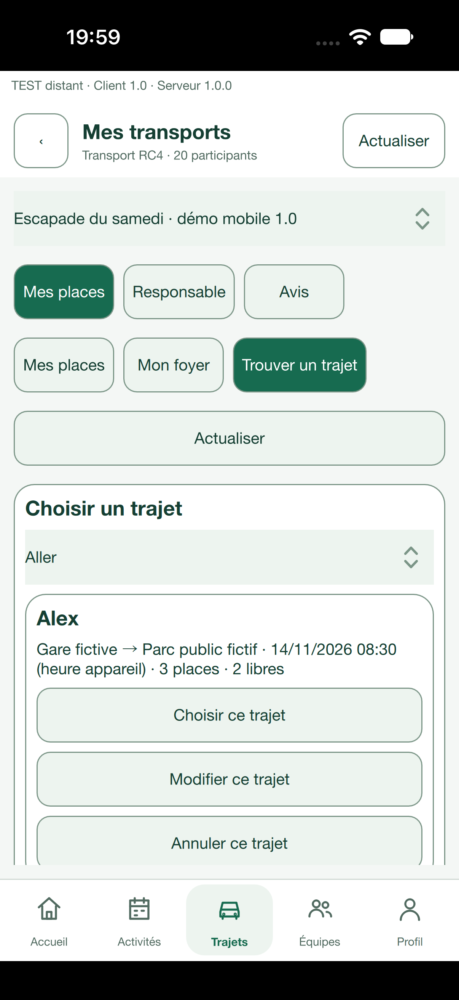
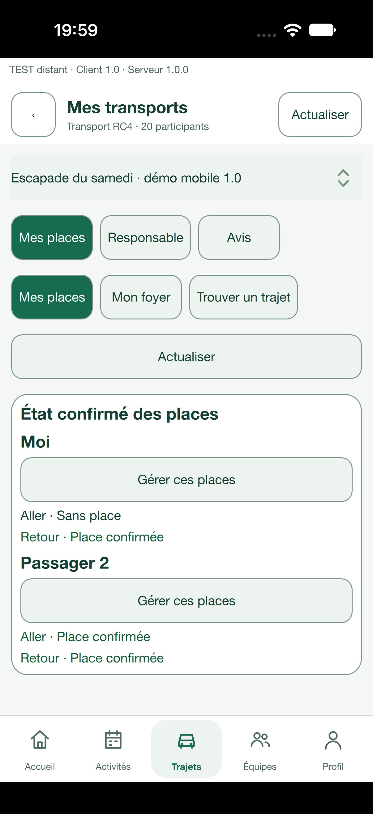
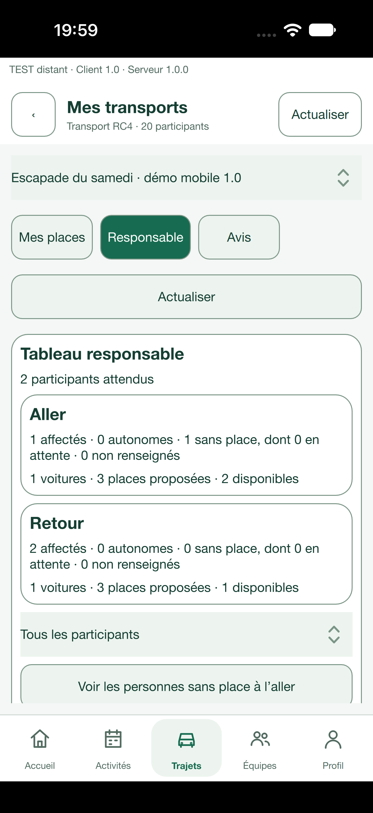
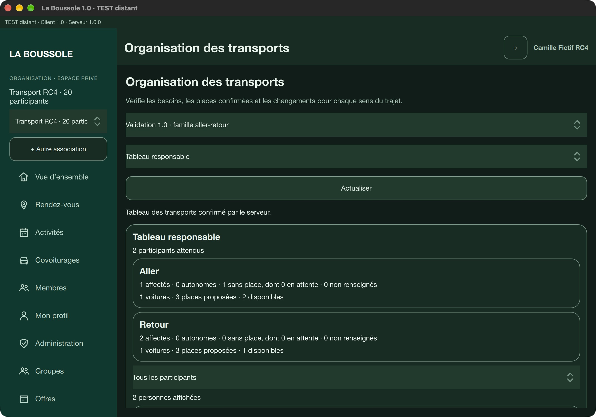

Household bookings
across devices.
A fictional household booked two outbound and two return seats on iOS. After cancelling one outbound seat on Android, the updated booking appeared on iOS with one outbound seat and two return seats still confirmed.
Cross-platform test on 12 November 2026. La Boussole 1.0.0, build 10006, on an iPhone 18 Pro simulator running iOS 27.2 and an Android API 36 emulator, connected to TEST server 1.0.0.
La Boussole 1.0 on mobile
The mobile interface uses Qt 6/QML and shares business logic with the desktop applications.
These are genuine screenshots from build 10006 on an iPhone 18 Pro simulator running iOS 27.2. The interface is in French. Names and places are fictional, and the “RC4” labels belong to the test data.


Home screen
Find the next activity among the dates shown, then open rides and the household’s seat bookings.


Activity details
Open the date, public meeting point and rides for an activity. Additional options are available when needed.


Outbound and return rides
Choose a leg and check available or confirmed seats. A pending request becomes a confirmed seat after the server confirms it.


Household passengers
Set each person’s needs for both legs, select seats to book and cancel for the passenger or leg concerned.


Organiser’s seat summary
Organisers can see who still needs a seat, who is on the waiting list and the details for each ride.
Earlier Mac test with version 1.0
On 12 November 2026, the Mac test used build 10005, code a3a9ee5, installed from the private DMG. Following confirmation from the server, the organiser saw one confirmed outbound seat and two confirmed return seats. A separate read of the server returned the same numbers. Each car still had a capacity of three seats.
| Leg | Confirmed seats | Passengers without a seat | Available seats |
|---|---|---|---|
| Outbound | 1 | 1 | 2 |
| Return | 2 | 0 | 1 |

What the tests covered
Booking and partial cancellation were verified between the iOS simulator and Android emulator. Swipe gestures were verified in the iOS simulator. Actions and focus navigation were exercised on Android. Testing swipe gestures on Android and the full new build on physical phones remains open. The Windows 1.0 build is pending because of the build service’s free quota.
A 60 frames-per-second rendering rate remains unverified. Retention periods and app privacy documents require completion before real data can be used. The €19 and €49 monthly prices per organisation are indicative. Public sign-up and payment remain closed.